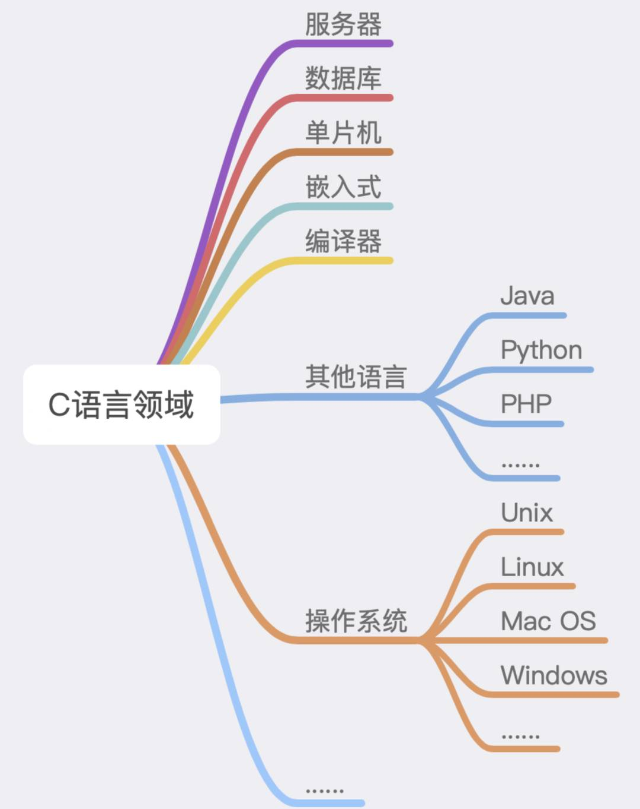

万字详文讲述C语言发展史的点点滴滴
原创腾讯技术工程2020-09-24 18:08:00
作者：李彦锋，腾讯 IEG 运营开发工程师
一直想写一篇关于C语言的文章，里面包含C语言的发展史、创始人等相关事迹。但是却迟迟未写，主要原因是因为：在我看来，这个语言太过于伟大、耀眼。作为一个仅仅使用过C语言的普通开发来说，完全没资格去写。但是，最近在看过一篇丹尼斯.里奇写的《C语言发展史》之后，坚定了我写这篇文章的决心。不是歌功颂德，仅仅是以一种客观的视角去欣赏。
任何一种新事物的出现都不是来自于偶然，而是时代所驱使的必然结果。
1.1 C语言有多伟大
如果你问我：C语言有多伟大。那么，我可能会想一下，说：多伟大我不知道，但是我知道很伟大。

这里，我想说一句可能有点片面的话，就是：如今这世界上，凡是带电的地方，可能都会有她(C语言)或者她的子孙的影子。
任何比C语言更低级的语言，都不足以完整地抽象一个计算机系统；任何比C高级的语言，都可以用C来实现。
1.2 C语言之父
https://www.bell-labs.com/usr/dmr/www/index.html
丹尼斯·麦卡利斯泰尔·里奇（英语：Dennis MacAlistair Ritchie，1941年9月9日－2011年10月12日），美国计算机科学家。黑客圈子通常称他为“dmr”。他是C语言的创造者、Unix操作系统的关键开发者，对计算机领域产生了深远影响，并与肯·汤普逊同为1983年图灵奖得主。
丹尼斯.里奇 生平时间线 ↑
麻省理工大学计算机系的马丁教授评价说："如果说，乔布斯是可视化产品中的国王，那么里奇就是不可见王国中的君主。乔布斯的贡献在于，他如此了解用户的需求和渴求，以至于创造出了让当代人乐不思蜀的科技产品。然而，却是里奇先生为这些产品提供了最核心的部件，人们看不到这些部件，却每天都在使用着。"
克尼汉评价道：牛顿说他是站在巨人的肩膀上，如今，我们都站在里奇的肩膀上。
1.3 C语言的先辈
为了简洁起见，我(Dennis M.Ritchie)省略了对C本身，其父级B [Johnson 73]和其祖父母BCPL [Richards 79]的完整描述，而只关注每种语言的特征元素以及它们如何演变。
This paper is about the development of the C programming language, the influences on it, and the conditions under which it was created. For the sake of brevity, I omit full descriptions of C itself, its parent B [Johnson 73] and its grandparent BCPL [Richards 79], and instead concentrate on characteristic elements of each language and how they evolved.
《The Development of the C Language》：
https://www.bell-labs.com/usr/dmr/www/chist.html
这段文字出自C语言之父丹尼斯.M.里奇所写的一篇关于《C语言发展史》的文章，文中明确指出C语言源自于B、BCPL两种语言。可以把C语言看做是站在巨人的肩上，顺应时代潮流的后浪。
1.3.1 BCPL语言之父
Martin Richards ↑
Martin Richards's BCPL Reference Manual, 1967：
https://web.archive.org/web/20080622171914/http://cm.bell-labs.com/cm/cs/who/dmr/bcpl.html
马丁·理查德（英语：Martin Richards，1940年7月21日－），生于英国，计算机科学家，为BCPL编程语言的发明者，发展了TRIPOS操作系统。
1966年，马丁·理查德在剑桥大学，以CPL编程语言为基础，发明了BCPL编程语言。
1.3.2 B语言之父
Kenneth Lane Thompson ↑
肯尼斯·兰·汤普逊（英语：Kenneth Lane Thompson，1943年2月4日－）小名肯·汤普逊（英语：Ken Thompson），美国计算机科学学者和工程师。黑客文化圈子通常称他为“ken”。在贝尔实验室工作期间，汤普逊设计和实现了Unix操作系统。他创造了B语言(基于BCPL) — C语言的前身，而且他是Plan 9操作系统的创造者和开发者之一。与丹尼斯·里奇同为1983年图灵奖得主。
2006年，汤普逊进入Google公司工作，与他人共同设计了Go语言。
1.3.3 一组Ken与Dennis的照片
日益精进
站在巨人的肩上
坐着的是Ken 站着的是Dennis ↑
与优秀之人为伍。
不畏得失，做有趣的事。
左 Ken、右 Dennis | 右上角：Unix标识牌 ↑
言传身教。
感谢丹尼斯.里奇留给了这世界一本“C语言圣经”。
可惜的是，当年笔者大学学的是谭浩强谭老师的C语言。
Dennis与《The C Programming Language》 ↑
互相成就。
终成正果。
你做了什么，最终会被世人看到。
1999年获得美国国家技术奖 [左一：Ken | 左二：Dennis | 右一：克林顿] ↑
从这些老照片中，我隐隐约约看到了几行小字，写着：
与优秀之人为伍
互相成就
试想，有多么重要？
1.4 C语言时间线
https://www.levenez.com/lang/
从图中时间线，可以明显的看出C语言的起源以及时间节点。
有时候不得不说时势造英雄，在1969~1971年之间著名的操作系统Unix从肯.汤普逊手中诞生，作为一种大型的系统性软件来说，极其需要一种可靠的高级语言的出现(当时的低级语言指的是汇编，因为之前的操作系统是用汇编写的)。这个时候的丹尼斯.里奇也没闲着，在对B语言改良之后，就诞生了带有类型的C语言(据里奇自己说，有一段时间称这种改良的语言为NB。即：new B。不过，在我们这些吃瓜群众眼中看来也确实NB)。
In 1971 I began to extend the B language by adding a character type and also rewrote its compiler to generate PDP-11 machine instructions instead of threaded code. Thus the transition from B to C was contemporaneous with the creation of a compiler capable of producing programs fast and small enough to compete with assembly language. I called the slightly-extended language NB, for `new B.'
1.5 unix时间线
Unix的诞生与C语言被广泛的传播、使用，有着密切的联系。
上图时间线只显示前几个与C语言在相同时间段内诞生的Unix版本(当然，感兴趣的话，可以查询Unix相关发展史，绝对会让你大吃一惊。其中最著名的几个分支：BSD、minix、Linux...)。
下面，通过在网上找得到的部分Unix内核源码，来追溯一下C语言出现的时机。
1.5.1 PDP-Unix
PDP-Unix系统内核代码文件
https://minnie.tuhs.org/cgi-bin/utree.pl?file=PDP7-Unix
可以看到基本都是用汇编写的(文件名后缀.s)。为什么用基本这个词呢？因为，在系统里面有一部分命令是用B语言写的。
1.5.2 First Edition Unix
First Edition Unix系统内核代码文件
https://minnie.tuhs.org/cgi-bin/utree.pl?file=V1
可以看到，还是用汇编写的(文件名后缀.s)。
1.5.3 Second Edition Unix
Second Edition Unix系统内核代码文件
Second Edition Unix The second edition of Unix was developed for the PDP-11 at Bell Labs by Ken Thompson, Dennis Ritchie and others. It extended the First Edition with more system calls and more commands. This edition also saw the beginning of the C language, which was used to write some of the commands.
https://minnie.tuhs.org/cgi-bin/utree.pl?file=V2
到这个版本，已经可以看到C语言的身影了。
1.5.4 Unix与C语言
从C语言在Unix V2版本出现之后，Unix的V3版本开始，已经可以在Unix内核中见到大量C语言编写的代码。
据里奇所说：到1973年初，现代C的基本知识已经完成。C语言和编译器强大到，足以让我们在当年夏天用C重写PDP-11的Unix内核 (也就是Unix的V3版本)。
By early 1973, the essentials of modern C were complete. The language and compiler were strong enough to permit us to rewrite the Unix kernel for the PDP-11 in C during the summer of that year.
到了这个时间节点，基本可以肯定的是C语言、Unix的大部分核心都已经完善。剩下要做的就是，可移植性、标准化。
后面的故事，大家可能也听说过：后来学术和政府组织中都在使用Unix，也正是由于Unix的风靡与兴盛，带动了C语言被广泛的传播、使用。
在1980年代，C语言的使用广泛传播，并且几乎所有机器体系结构和操作系统都可以使用编译器。尤其是，它已成为个人计算机的编程工具，无论是用于这些机器的商业软件制造商，还是对编程感兴趣的最终用户，都非常受欢迎。
During the 1980s the use of the C language spread widely, and compilers became available on nearly every machine architecture and operating system; in particular it became popular as a programming tool for personal computers, both for manufacturers of commercial software for these machines, and for end-users interested in programming.
这也就是所谓的互相成就。
一句话概括就是：不畏得失、日渐精进，最终互相成就。
1.6 第一个C语言编译器是怎样编写的？
不知道你有没有想过，大家都用C语言或基于C语言的语言来写编译器，那么世界上第一个C语言编译器又是怎么编写的呢？这不是一个“鸡和蛋”的问题……
回顾一下C语言历史：Tomphson在BCPL的基础上开发了B语言，Ritchie又在B语言的基础上成功开发出了现在的C语言。在C语言被用作系统编程语言之前，Tomphson也用过B语言编写过操作系统。可见在C语言实现以前，B语言已经可以投入使用了。因此第一个C语言编译器的原型完全可能是用B语言或者混合B语言与PDP汇编语言编写的。
我们现在都知道，B语言的执行效率比较低，但是如果全部用汇编语言来编写，不仅开发周期长、维护难度大，更可怕的是失去了高级程序设计语言必需的移植性。
所以早期的C语言编译器就采取了一个取巧的办法：先用汇编语言编写一个C语言的一个子集的编译器，再通过这个子集去递推，进而完成完整的C语言编译器。
详细的过程如下：先创造一个只有C语言最基本功能的子集，记作C0语言，C0语言已经足够简单了，可以直接用汇编语言编写出C0的编译器。依靠C0已有的功能，设计比C0复杂，但仍然不完整的C语言的又一个子集C1语言，其中C0属于C1，C1属于C，用C0开发出C1语言的编译器。在C1的基础上设计C语言的又一个子集C2语言，C2语言比C1复杂，但是仍然不是完整的C语言，开发出C2语言的编译器 …… 如此直到CN，CN已经足够强大了，这时候就足够开发出完整的C语言编译器的实现了。至于这里的N是多少，这取决于你的目标语言（这里是C语言）的复杂程度和程序员的编程能力。简单地说，如果到了某个子集阶段，可以很方便地利用现有功能实现C语言时，那么你就找到N了。下面的图说明了这个抽象过程：
https://kknews.cc/tech/bx2r3j.html 介绍一个概念，“自编译”Self-Compile，也就是对于某些具有明显自举性质的强类型（所谓强类型就是程序中的每个变量必须声明类型后才能使用，比如C语言，相反有些脚本语言则根本没有类型这一说法）编程语言，可以借助它们的一个有限小子集，通过有限次数的递推来实现对它们自身的表述，这样的语言有C、Pascal、Ada等等，至于为什么可以自编译，可以参见清华大学出版社的《编译原理》，书中实现了一个Pascal的子集的编译器。
https://zhuanlan.zhihu.com/p/136102461
而这个过程也在Unix V2版本中找到了证据。
肯恩·汤普森，丹尼斯·里奇和其他人在贝尔实验室为PDP-11开发了Unix的第二版。它通过更多的系统调用和更多的命令扩展了第一版。此版本还看到了C语言的开始，该语言用于编写一些命令。
此处的代码仅是某些命令，某些库函数和C编译器的源代码。c /中的文件来自 last1120c.tar.gz 磁带，并构成了第二版Unix的有效C编译器。
下载地址：
http://minnie.tuhs.org/Archive/Applications/Early_C_Compilers/last1120c.tar.gz
The second edition of Unix was developed for the PDP-11 at Bell Labs by Ken Thompson, Dennis Ritchie and others. It extended the First Edition with more system calls and more commands. This edition also saw the beginning of the C language, which was used to write some of the commands.
The code here is only the source to some of the commands, some of the library functions, and the C compiler. The files in c/ come from the last1120c.tar.gz tape, and form a working C compiler for Second Edition Unix.
https://minnie.tuhs.org/cgi-bin/utree.pl?file=V2
下载源码解压缩之后，目录结构如下：
感兴趣的小伙伴可以下载下来研究一下。
如果想要找到一种好的方式，来进行编程语言之间比较的话，那么非代码莫属。
2.1 3 种语言代码示例
下面分别使用BCPL、B、C三种语言实现一个简单的程序：程序将三个数字a、b、c相加，并将结果赋值给sum，最后打印总和。
2.1.1 BCPL语言示例
BCPL：https://zh.wikipedia.org/wiki/BCPL
GET "libhdr"
LET start() = VALOF
{
LET a, b, c = 1, 2, ,3
sum := a + b + c
writen(sum)
}
LET 声明变量
:= 符号为赋值符号 Go中也有该符号，表示函数内部局部变量。这里感觉很有意思的一点是：最初B语言之父肯.汤普逊把:=符号改成了=符号。现在，也作为Go语言之父之一，又把:=符号请回来了(冥冥之中的命运~)。
从BCPL到B的过渡中，决定使用单个字符 = 代替赋值 :=
Other fiddles in the transition from BCPL to B were introduced as a matter of taste, and some remain controversial, for example the decision to use the single character = for assignment instead of :=. Similarly, B uses /**/ to enclose comments, where BCPL uses //, to ignore text up to the end of the line. The legacy of PL/I is evident here. (C++ has resurrected the BCPL comment convention.) Fortran influenced the syntax of declarations: B declarations begin with a specifier like auto or static, followed by a list of names, and C not only followed this style but ornamented it by placing its type keywords at the start of declarations.
The Development of the C Language：
https://www.bell-labs.com/usr/dmr/www/chist.html
2.1.2 B语言示例
A TUTORIAL INTRODUCTION TO THE LANGUAGE B ：https://web.archive.org/web/20070807110157/http://cm.bell-labs.com/cm/cs/who/dmr/btut.html
B语言的语言结构
main()
{
-- statements --
}
newfunc(arg1, arg2)
{
-- statements --
}
fun3(arg)
{
-- more statements --
}
B语言代码示例
main()
{
auto a, b, c, sum;
a = 1; b = 2; c = 3;
sum = a+b+c;
putnumb(sum);
}
语句auto ...是一个声明。即，它定义了要在函数内使用的局部变量
putnumb 是一个带参数的库函数，它将在终端上打印一个数字
2.1.3 C语言示例
#include <stdio.h>
void main()
{
int a,b,c,sum;
a=1; b=2; c=3;
sum = a+b+c;
printf("%d", sum);
}.
2.2 示例代码中三者的区别
通过上面例子可以三者的区别：
C语言写法更接近于B语言
BCPL、B语言都是无类型的语言，用word/cell表示一个固定长度的bit。C语言是有类型的
有一些地方，你可能感兴趣：
++、-- 符号是Thompson发明的
&&、|| 是在C语言引入的
说明：
查了好久只找到了BCPL、B语言的部分代码片段，至于能不能跑起来，我也不知道 ^_^
如果想要知晓三者的具体区别的话，建议阅读丹尼斯.里奇关于《C语言发展史》的文章
BCPL、B语言也有经历过若干次版本迭代 (因为，网上找到的代码片段有很多写法不一样的地方。比如说，维基百科中找到的B代码片段，与在Unix内核前几个版本中找到的B代码片段写法就不一样。个人推测是版本问题，不同的版本不同的写法)
C语言更接近与B语言，或者说是在B的基础上不断的添加了很多新特性 (抛出2个问题：1.里奇起名字时为什么不像C++一样，起名叫B++ ？ 2.为什么C++用了2个加号，而不是一个加号，叫C+ ？ 欢迎脑洞够大的同学在评论留言！)
如果有高手觉得上面的代码片段有问题或者知道怎么跑起来的话，可以私下交流
1960s年代后期，贝尔实验室对计算机系统的研究进入繁盛时期。MIT、General Electric、Bell实验室合作的Mutlics项目以失败而告终(1969年左右)。就是在这个时期，Ken Tompson开始写Mutlics的替代品，他希望按照自己的设计构造一个令人舒服的计算系统（也就是Unix）。后来在写出第一个版本的Unix时，觉得Unix上需要一个新的系统编程语言，他创造了一个B语言。B语言是没有类型的C，准确说B语言是Tompson把BCPL挤进8K内存，被其个人大脑过滤后的产生的语言。
由于B语言存在的一些问题，导致其只是被用来写一些命令工具使用。恰好在这个时期，Ritchie在B语言的基础上，进行了重新的设计改良，从而诞生了C语言。
1973年，C语言基本上已经完备，从语言和编译器层面已经足够让Tompson和Ritchie使用C语言重写Unix内核。后来，Unix在一些研究机构、大学、政府机关开始慢慢流行起来，进而带动了C语言的发展。
1978年，K&R编写的《The C Programming Language》出版，进一步推动了C语言的普及。
用一句话总结就是：对的时间、对的地点，出现了对的人以及工具 (Unix与C语言的关系，有点像GNU与Linux kernel的关系，都是互相成就)。
C语言及其标准经过若干次迭代之后，就成了今天大家看到的样子。其标准中指定了很多C标准库，而不同的系统都有自己不同的代码实现。
当然，Linux内核中也有实现了标准C库的代码，下面一起欣赏她的美。
4.1 标准C库
ANSI C共包括15个头文件。1995年，Normative Addendum 1（NA1）批准了3个头文件（iso646.h、wchar.h和wctype.h）增加到C标准函数库中。C99标准增加6个头文件（complex.h、fenv.h、inttypes.h、stdbool.h、stdint.h和tgmath.h）。C11标准中又新增了5个头文件（stdalign.h、stdatomic.h、stdnoreturn.h、threads.h和uchar.h）。
至此，C标准函数库共有29个头文件：
4.2 linux/lib/string.c
linux kernel版本：4.18.13
https://www.kernel.org/
下面列出3个字符串处理函数 strcpy()、strncpy()、strncat()。代码出自Linus Benedict Torvalds之手，为什么这么说？看代码头部注释，还是那个熟悉的味道stupid。看过git源代码的人应该也会知道，git源码中也有类似注释。
// SPDX-License-Identifier: GPL-2.0
/*
* linux/lib/string.c
*
* Copyright (C) 1991, 1992 Linus Torvalds
*/
/*
* stupid library routines.. The optimized versions should generally be found
* as inline code in <asm-xx/string.h>
*
* These are buggy as well..
*
* * Fri Jun 25 1999, Ingo Oeser <ioe@informatik.tu-chemnitz.de>
* - Added strsep() which will replace strtok() soon (because strsep() is
* reentrant and should be faster). Use only strsep() in new code, please.
*
* * Sat Feb 09 2002, Jason Thomas <jason@topic.com.au>,
* Matthew Hawkins <matt@mh.dropbear.id.au>
* - Kissed strtok() goodbye
*/
// .......omit other......
// ...... here is my love code .....
#ifndef __HAVE_ARCH_STRCPY
/**
* strcpy - Copy a %NUL terminated string
* @dest: Where to copy the string to
* @src: Where to copy the string from
*/
#undef strcpy
char *strcpy(char *dest, const char *src)
{
char *tmp = dest;
while ((*dest++ = *src++) != '\0')
/* nothing */;
return tmp;
}
EXPORT_SYMBOL(strcpy);
#endif
#ifndef __HAVE_ARCH_STRNCPY
/**
* strncpy - Copy a length-limited, C-string
* @dest: Where to copy the string to
* @src: Where to copy the string from
* @count: The maximum number of bytes to copy
*
* The result is not %NUL-terminated if the source exceeds
* @count bytes.
*
* In the case where the length of @src is less than that of
* count, the remainder of @dest will be padded with %NUL.
*
*/
char *strncpy(char *dest, const char *src, size_t count)
{
char *tmp = dest;
while (count) {
if ((*tmp = *src) != 0)
src++;
tmp++;
count--;
}
return dest;
}
EXPORT_SYMBOL(strncpy);
#endif
#ifndef __HAVE_ARCH_STRLCPY
#ifndef __HAVE_ARCH_STRNCAT
/**
* strncat - Append a length-limited, C-string to another
* @dest: The string to be appended to
* @src: The string to append to it
* @count: The maximum numbers of bytes to copy
*
* Note that in contrast to strncpy(), strncat() ensures the result is
* terminated.
*/
char *strncat(char *dest, const char *src, size_t count)
{
char *tmp = dest;
if (count) {
while (*dest)
dest++;
while ((*dest++ = *src++) != 0) {
if (--count == 0) {
*dest = '\0';
break;
}
}
}
return tmp;
}
EXPORT_SYMBOL(strncat);
#endif
#ifndef __HAVE_ARCH_STRLCAT
// .......omit other......
// ...... here is my love code .....
第一次跟同学一起看这些代码的时候，他说了一句话：这才叫代码，其他的都是s-h-X-t。现在回想起，自己在实现这些代码时，写了一坨不知道是什么的东西。哎，代码比代码要扔~
阅读他人代码, 也是一种进步、成长
《史记·廉颇蔺相如列传》记载，廉颇被免职后，跑到魏国，赵王想再用他，派人去看他的身体情况，廉颇之仇郭开贿赂使者，使者看到廉颇，廉颇为之米饭一斗，肉十斤，被甲上马，以示尚可用。使者回来报告赵王说:"廉颇将军虽老，尚善饭，然与臣坐，顷之三遗矢(通假字，即屎)矣。"赵王以为廉颇已老，遂不用。
经历过几十年的风雨洗礼，C语言可谓风光无数，这世界上随处可见它的身影。但是，同时在一些人眼里，可能觉得C语言已是暮年(将近50岁)、老矣。如同下图：
如果你真这样想，那你就错了。
TIOBE Index for September 2020：
https://www.tiobe.com/tiobe-index/
TIOBE 2020-09 编程语言排行榜告诉你，C语言宝刀未老，还是那个风采耀眼的少年。
个人想说的是，只要计算机还是基于冯诺依曼体系结构，芯片还是基于物理制程。那么，都会有一片C的天空。因为，她知道一个最接近天空的地方(C是最接近汇编、机器语言的高级语言之一)。
任他上层应用改朝换代，我（C语言）自岿然不动。这就是C，我心中的C语言。
总结
猛然间发现已经到了总结，但是还觉得仍旧意犹未尽，这并不是我心目中最真实的那个她。但是，我还是希望你看完本文之后，能够多少了解与熟悉C的美与真实。
最后想说的是：纵使千言万语也说不尽C语言的重要性，这些文字也仅仅只是冰山一角。
鉴于个人能力有限，如有问题或者缺陷，欢迎指正。
参考资料
在整理的过程中，部分参考、引用下面链接地址内容：
[1] https://www.bell-labs.com/usr/dmr/www/index.html
里奇贝尔实验室主页
[2] https://www.bell-labs.com/usr/dmr/www/chist.html
C语言发展史
[3] https://www.bell-labs.com/usr/dmr/www/1stEdman.html
Unix Programmer's Manual
[4] https://www.bell-labs.com/usr/dmr/www/bcpl.html
Martin Richards's BCPL Manual
[5] https://www.levenez.com/lang/
Computer Languages History
[6] https://www.levenez.com/unix/
Unix History
[7] https://minnie.tuhs.org/cgi-bin/utree.pl
The Unix Tree(可以看到很多老系统的源代码)
[8] https://zh.wikipedia.org/wiki/丹尼斯·里奇
丹尼斯·里奇
[9] https://www.tiobe.com/tiobe-index/
TIOBE
[10] http://web.eah-jena.de/~kleine/history/
Historic Documents in Computer Science